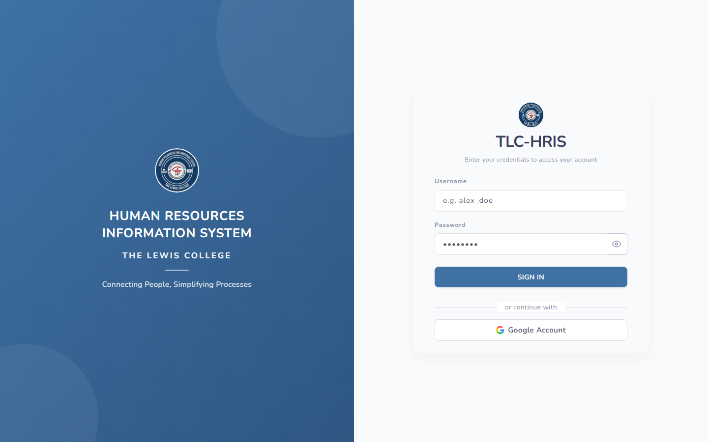

Login
The entry point to TLC-HRIS. Every user — HR staff, immediate heads, faculty, and rank-and-file employees — signs in from the same page.

Display Sign-In Screen
Users sign in with their username and password. A "Google Account" button is also available for accounts linked to a Google work email — no self-registration is offered, so accounts must already exist in the system.
Rules & Validation
- Username and password are both required; the account must exist and be Active.
- Login via Google Account only succeeds if a user record already exists with a matching Google/work email — Google sign-in does not auto-create accounts.
- After signing in, the menu and available actions are filtered by the permissions assigned to the account's User Type (role).
Frequently Asked Questions
Common questions about Login.
I forgot my password. What do I do?⌄
Ask an HR administrator to reset it from User Accounts. If you know your current password and just want to change it, use My Profile.
Why can't I see a menu item after logging in?⌄
Menu items and action buttons are controlled by permissions tied to your User Type. Ask an HR administrator to check your role under User Types & Permissions.